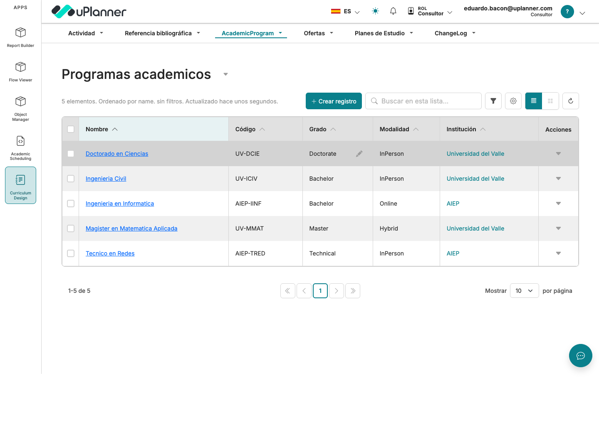
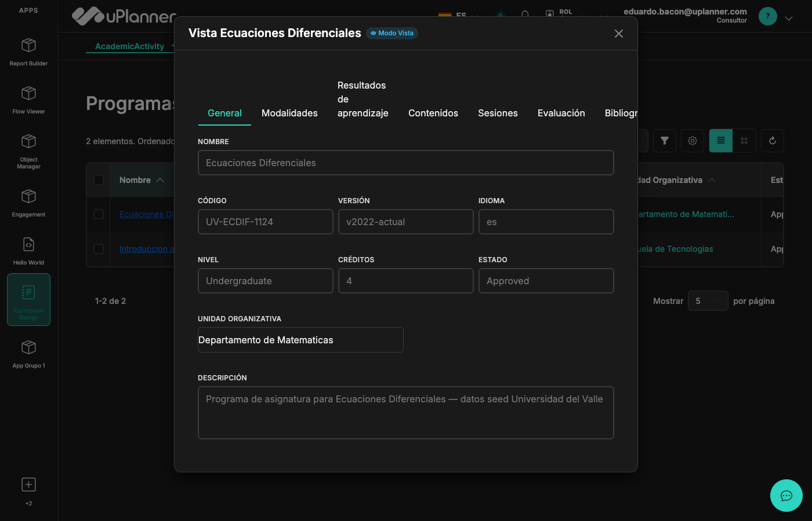
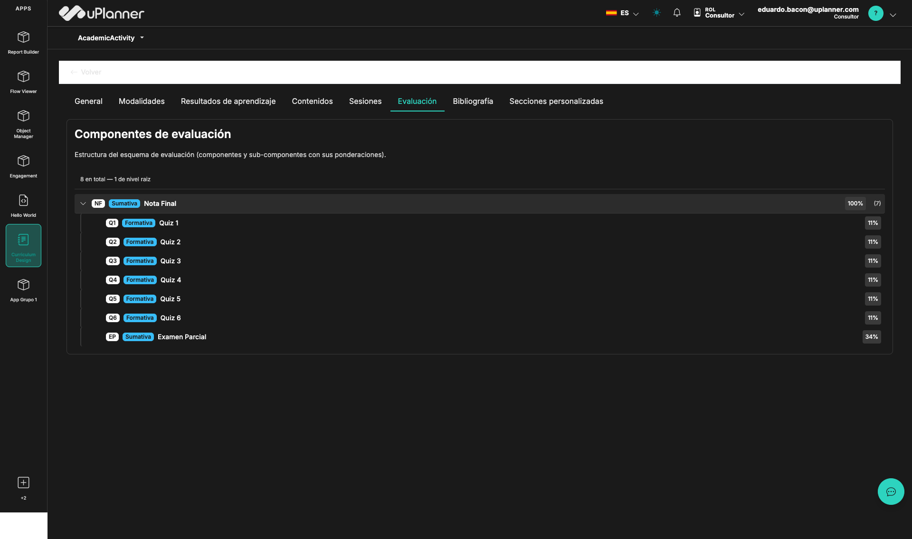
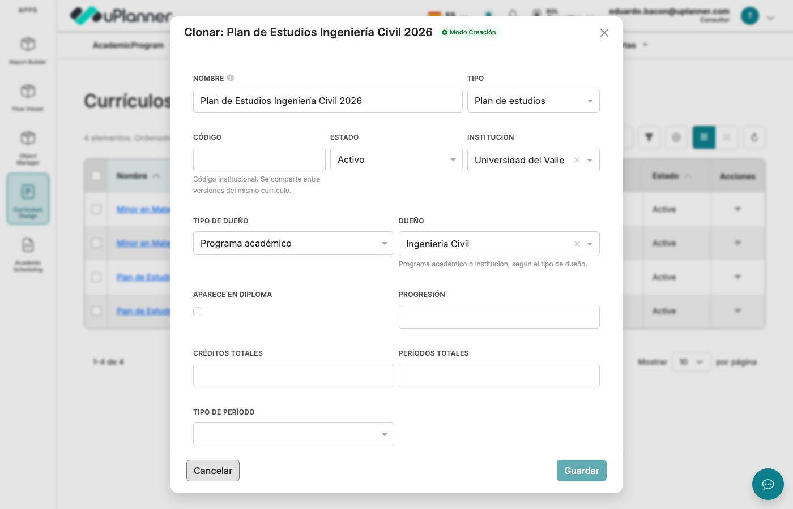
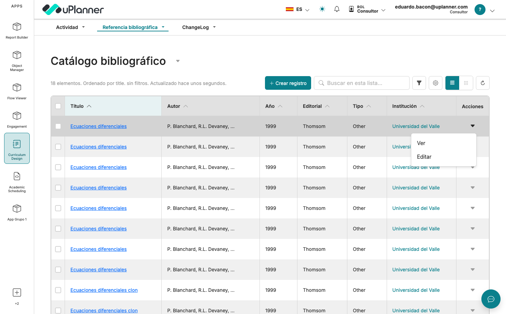
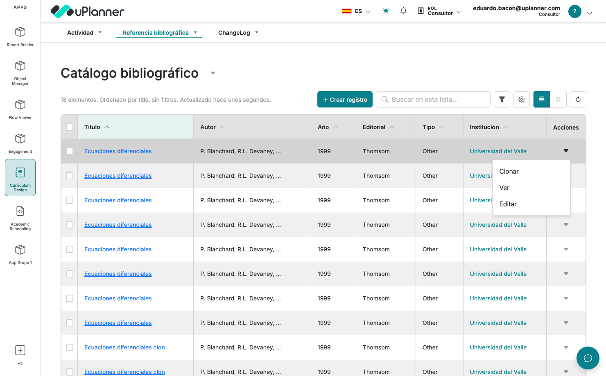

Pensado para leerse de lo general a lo específico. Primero el panorama esencial de UP1; después, tema por tema y con ejemplos reales, los puntos más finos.
Empezamos con el panorama —sin abrumar— y recién después bajamos al detalle. Así construyes el modelo mental antes de ver cada pieza por dentro.
El panorama general de UP1: qué es, qué es un objeto, cómo se ve en pantalla, y las piezas grandes. Una idea por lámina, para entender el todo.
Al terminar esta parte ya sabes "de qué va" UP1.
Los puntos complejos uno a uno, con ejemplos reales del mod. Aquí sí entran snippets, capturas, casos y las buenas/malas prácticas.
Cada tema: cómo funciona · el ejemplo · se debe / no se debe.
Una plataforma modular y multi-tenant para instituciones educativas. En vez de programar cada pantalla, declaras objetos y configuración, y la plataforma los materializa.
Cada funcionalidad grande es un mod que extiende el núcleo sin tocarlo.
Una sola app y BD sirven a muchas instituciones aisladas entre sí.
Defines en JSON; la plataforma genera tabla, API y pantalla.
Defines un objeto en un archivo JSON y de ahí salen cuatro cosas sin escribirlas. Este es el corazón de UP1.
en la base de datos
GraphQL lista
lista y formulario
capabilities base
Los datos fluyen de izquierda a derecha. Lo importante: casi siempre trabajas en un mod (la izquierda); el resto se alimenta solo.
Una sola base de datos que sirve a muchas instituciones (tenants), aisladas por aplicación. Cada institución ve solo lo suyo y con su propio tema visual.
Cada request lleva su tenant en X-Tenant-ID; la URL es /{tenant}/{objeto}/{layout}.
Toda consulta filtra por tenantId. Olvidarlo = una institución ve datos de otra (el peor bug posible).
La pieza central de UP1: una entidad de negocio (una carrera, un curso, una persona) descrita como JSON. Tiene tres partes.
{
"title": "MiObjeto",
"metadata": { "label": "Mi objeto" },
"properties": {
"name": { "type": "string", "not_null": true },
"status": { "enum": ["Draft", "Active"] }
},
"required": ["name"]
}enum se vuelve un dropdown; una relación, un picker. (el detalle, en la Parte 2)Un objeto puede existir en cuatro variantes según su rol. Por ahora solo reconócelas; cuándo usar cada una lo vemos en la Parte 2.
La entidad completa, un concepto propio.
Una variante de una base (comparten estructura).
Campos extra para un cliente puntual.
Campos que todos heredan (id, fechas…).
Las pantallas también son JSON (llamadas layouts). No se programan a mano: un orquestador las arma según su tipo. Los dos principales:
Una tabla de registros: búsqueda, filtros, orden y acciones por fila.
Un formulario para crear/editar/ver, con pestañas y sublistas.
Con objetos y vistas ya entiendes el 80%. Estas cuatro completan el panorama; cada una tiene su capítulo en la Parte 2.
Piezas de UI reutilizables (átomos) y elementos propios cuando hace falta.
Capabilities que deciden quién ve y hace qué.
Los textos son claves que se traducen por idioma y tenant.
Acciones async: notificar, auditar, integrar — sin bloquear al usuario.
La info de UP1 vive repartida entre muchos archivos. Bayley los lee y te los muestra conectados y navegables — objetos, permisos, textos, navegación — sin modificar nada.
Casi todo el modelo de UP1 se apoya en tres patrones que se repiten. Reconocerlos es captar la filosofía: minimizar objetos, maximizar abstracción.
Un campo discriminador dice qué variante es cada fila, sin crear objetos separados.
Un parentId que apunta al mismo objeto arma árboles jerárquicos con esquema uniforme.
tipo + id (ej. ownerType+ownerId) para apuntar a varias tablas según el caso.
Curriculum (Plan/Minor). Composite → el árbol de CurricularSection. FK polimórfica → el owner de Curriculum.Concepto de negocio propio. Ej: Activity, AcademicProgram.
Variantes 1:1 que difieren en pocos campos. Ej: Plan/Minor.
Campos custom por tenant. ext__CLIENTE__obj.
De todos: id, createdAt…
id/createdAt: ya vienen de common.json.Antes de escribir el JSON decides dónde ponerlo. La ubicación define su alcance: quién lo ve y quién lo puede extender.
Una carrera es una entidad propia → objeto base. Lo interesante es cómo cada línea define comportamiento. Veamos qué significa cada una.
{
"title": "AcademicProgram",
"metadata": {
"label": "Programa academico",
"defaultLayoutType": "RecordList",
"uniqueConstraints": [["institutionId", "code"]]
},
"properties": {
"name": { "type": "string", "not_null": true },
"code": { "type": "string", "not_null": true,
"uniqueScopedBy": ["institutionId"] },
"degree": { "type": "string", "not_null": true,
"enum": ["Bachelor","Master","Doctorate"] },
"institutionId": { "type": "string", "not_null": true,
"isForeignKey": true, "references": "Institution" }
},
"required": ["name","code","degree","institutionId"]
}label | El nombre visible en la UI (no el técnico). |
defaultLayoutType | Con qué pantalla abre por defecto (una lista). |
not_null: true | Obligatorio: el form no guarda sin él; columna NOT NULL. |
enum | Valores fijos → la UI muestra un dropdown. |
isForeignKey | Relación a Institution → un picker + relación en BD. |
uniqueScopedBy | El code es único por institución, no global. |
codegen → migrate → sync. Tabla + API + pantalla, sin programar la vista.El mismo AcademicProgram.json, ya sincronizado, produce esta lista. Cada decisión del objeto reaparece en pantalla.
properties.enum.isForeignKey.
Plan y Minor son el mismo tipo de cosa (un currículo) que difieren en pocos campos. En vez de dos tablas, una base + record-types: una tabla, un discriminador, y cada variante aporta solo lo suyo.
"recordType": {
"enum": ["Plan", "Minor"],
"static_default": "Plan"
}{ "title": "Plan", "baseObject": "Curriculum",
"properties": {
"progression": { "enum": ["Sequential","Modular"] },
"totalCredits": { "type": "integer" },
"totalPeriods": { "type": "integer" }
} }recordType es el discriminador: en cada fila guarda "Plan" o "Minor". baseObject: "Curriculum" le dice al codegen "esto extiende Curriculum". Plan agrega columnas; Minor no → una sola tabla contiene ambas.enum con static_default. Al crear nace "Plan" por defecto; la UI ofrece elegir.baseObject. Qué rompe: el RT no hereda nada, queda suelto."Postgrado" al enum y (si aporta campos) rt__Postgrado__curriculum.json. Cero tablas nuevas.Elegir el type correcto define cómo se guarda y cómo se ve/edita.
| Tipo | En el JSON | En BD | En pantalla |
|---|---|---|---|
| String / Number / Bool | "type":"string"|"integer"|"boolean" | String/Int/Boolean | input / toggle |
| Enum | "enum":[...] | string acotado | dropdown |
| Foreign Key | "isForeignKey":true,"references":"X" | relación FK | picker del objeto X |
| Self-FK | "references":"<mismo>" | self-relation | jerarquía / árbol |
| FK polimórfica | ownerType (enum) + ownerId | String (sin FK) | picker condicionado |
| JSON | "type":"object" | Json | componente custom |
enum; relación con una entidad → isForeignKey; relación con varias → polimórfico (ownerType+ownerId).Un currículo puede pertenecer a una carrera (Plan) o a una institución (Minor). Necesitamos una relación que apunte a dos tablas distintas según el caso. Una FK normal solo apunta a una. La solución: FK polimórfica = dos campos que dicen "a qué tipo" y "a cuál".
"ownerType": {
"enum": ["AcademicProgram", "Institution"],
"static_default": "AcademicProgram"
},
"ownerId": {
"type": "string", "not_null": true
// sin isForeignKey: apunta a distintas tablas
}ownerType guarda el tipo de dueño. 2) ownerId guarda el id del dueño. 3) En la UI, un composable lee ownerType y consulta la tabla correcta para el picker de ownerId.ownerType con un enum. Un enum es una lista cerrada de valores. Cómo afecta: la UI ofrece solo esas opciones y el resolver sabe a qué tabla resolver. Si no: entra cualquier texto y el picker no sabe qué consultar.ownerId en el resolver. El resolver es el código de servidor que atiende la mutation. Por qué: sin FK real, la BD no verifica; sin esa validación guardas un dueño inexistente.isForeignKey en ownerId. Ese flag fija una tabla. Qué rompe: el caso "a veces carrera, a veces institución" deja de ser posible y el codegen falla.ownerType como string libre. Qué rompe: un typo no matchea, el picker queda vacío y el bug aparece en runtime.ownerType = Institution → el picker consulta Institution y eliges "U. del Valle". Mañana un Plan → ownerType = AcademicProgram y consulta carreras. Un solo par de campos cubre ambos.Un plan evoluciona: v1 → v2 → v3, pero todas son "el mismo" plan con el mismo código. El reto: encadenar versiones sin que el código único choque. Se resuelve con versionado por linaje.
"metadata": {
"versioning": {
"linkageField": "previousVersionId",
"versionField": "version",
"requiredCapability": "curriculum:version"
}
},
"code": { "type": "string", "not_null": true
// NO @@unique: se comparte entre versiones
},
"previousVersionId": {
"isForeignKey": true, "references": "Curriculum" // self-FK
}previousVersionId el id de la anterior (self-FK: una FK a la misma tabla). Eso forma la cadena v1←v2←v3, el "linaje". El bloque versioning dice cómo numerar y qué permiso exige.code sin @@unique. Cómo afecta: como v1/v2/v3 comparten el code, la unicidad "una raíz por (institución, code)" la valida el resolver, no la columna.requiredCapability. Solo quien tenga curriculum:version versiona.@@unique en code. Qué rompe: la BD rechaza la v2 con el mismo código → versionar es imposible.version a mano. Qué rompe: se descoordina la numeración; dos "v2" en un linaje.code=ICIV) → creas la v2: nace con code=ICIV (igual), version=2, previousVersionId = id de la v1. El código se repite a propósito; las distingue la cadena.Un programa tiene modalidades, resultados, contenidos, sesiones… 7 tipos de "sección" que comparten estructura pero cambian su contenido. El patrón Composite los resuelve con una sola tabla.
Base abstracto (casi sin campos propios) + recordType (7 RTs) + parentId self-FK para el árbol + owner polimórfico al Activity.
Mismo patrón, 3 RTs: RecordState (prereq), Group (K de N), MetricThreshold (umbral).
parentId apunta a otra fila del mismo objeto (self-FK) → así se arma el árbol (una evaluación con sub-evaluaciones).recordType al listar. Los 7 tipos conviven en la misma tabla.CurricularSection con recordType=EvaluationComponent, enlazadas por parentId.Cada tarjeta de la malla es un planEntry: "esta asignatura va en este período". Enseña dos ideas: no guardar lo que puedes calcular e integridad protegida por la BD, no solo por la UI.
"activityId": { "isForeignKey": true, "references": "Activity" },
"categoryId": {
"isForeignKey": true, "references": "requirementCategory",
"onDelete": "Restrict" // la BD bloquea borrar una
}, // categoría con entries
"blockId": { "type": "string" }, // null=obligatoria; si tiene valor=electiva
"credits": { "type": "number" }, // null → hereda de Activity.credits
"period": { "type": "integer", "not_null": true }onDelete: Restrict = regla en la BD que impide borrar una categoría con entries colgando.credits es null, muestra el de la Activity. Por qué: si el curso cambia, la malla se actualiza sola.blockId. Un campo define dos cosas, sin flag redundante.isElective aparte. Qué rompe: duplica blockId; tarde o temprano quedan en desacuerdo.planEntry no guarda "3": lo hereda. Si pasa a 4, la malla dice 4 sin tocar nada. Y borrar la línea "Núcleo" con asignaturas: la BD lo impide.Un programa pasa por estados (Borrador → Revisión → Publicado) con reglas que la BD no puede expresar. Por eso el estado no se edita a mano: se gobierna con mutations *Validated.
// SÍ — valida 8 pre-condiciones + history atómico
transitionActivityValidated(input)
updateActivityValidated(id, input)
// NO — saltan la validación de negocio
updateActivity(id, input) // CRUD genérico
prisma.activity.update(...) // Node directoActivity.currentStatusId, read-only para el CRUD. transitionActivityValidated comprueba 8 reglas (la transición existe, sale del estado actual, el usuario tiene permiso…) y cambia estado + historial en una sola operación atómica.*Validated. Único camino → todas las reglas en un lugar; nadie las salta.prisma.update para el estado. Qué rompe: saltan las 8 validaciones → transición inválida, BD inconsistente y difícil de detectar.currentStatusId en el formulario. Es read-only a propósito.*Validated y hazla la única puerta de escritura para ese caso.codegen + reiniciar el server tras cambiar objetos.schema.prisma o dynamic.js (auto-generados).ALTER TABLE / db push quirúrgico para tapar drift.codegen, reinicia. El 90% se resuelve así.La UI de UP1 no es un render imperativo: es una proyección declarativa del modelo. Cada columna, select o sublista referencia un campo o relación del objeto. Si el modelo es sólido, la vista se arma en minutos.
| En el objeto (JSON) | En el layout (JSON) | En la pantalla |
|---|---|---|
campo enum / static_default | select con items | dropdown de opciones fijas |
isForeignKey (mismo scope) | columna con relations + relationDisplayFields | celda con el nombre del relacionado |
parentId (self-FK) | custom element (tree) | árbol jerárquico / drag&drop |
| relación 1:N (hijos) | campo record-list con {{parentId}} | sublista embebida |
campo status enumerado | filtros + rowActions con conditions | vistas por estado + acciones condicionales |
Una pantalla es un layout JSON en la BD. La Suite no usa RecordList/RecordDetail directo — todo pasa por el LayoutOrchestrator, que decide qué renderizar según layoutType y resuelve sublistas y placeholders ({{parentId}}).
RecordList/RecordDetail directo en la Suite.El detalle agrupa campos en tabs y define cada uno en schema. Una lista embebida es un campo record-list filtrado por {{parentId}}.
"tabs": {
"general": { "label": "General",
"elements": ["name","code","version","credits"] },
"modalities": { "label": "Modalidades",
"elements": ["modalitiesList"] }
},
"schema": {
"modalitiesList": {
"type": "record-list",
"objectName": "CurricularSection",
"layoutConfig": {
"filters": [
{ "field": "ownerId", "value": "{{parentId}}" },
{ "field": "recordType", "value": "Modality" } ],
"openMode": "modal"
}
}
}
tabs del JSON son las pestañas; General muestra sus elements.Una row action es un botón en cada fila. Aquí, "Crear nueva versión" de un Activity. Cada propiedad controla un comportamiento.
{
"id": "create-new-version",
"type": "create",
"label": "Crear nueva versión",
"requiredCapability": "activity:version",
"prefillFromCurrent": true,
"asNewVersion": true,
"redirectTo": "edit",
"confirmCascade": true,
"visibilityConditions": {
"operator": "AND",
"conditions": [
{ "field": "currentstatus.allowsVersioning",
"operator": "==", "value": true } ]
}
}type:"create" | La acción crea un registro (vs. modal o mutation). |
requiredCapability | Solo aparece si el usuario tiene el permiso; el server revalida. |
prefillFromCurrent | Copia los campos de la fila actual al nuevo. |
asNewVersion | "Es una versión": encadena previousVersionId e incrementa version. |
redirectTo:"edit" | Tras crear, abre en edición. |
confirmCascade | Pide confirmación (acción con consecuencias). |
visibilityConditions | Solo se muestra si el estado permite versionar. |
currentstatus.allowsVersioning; para leerlo, la relación currentstatus debe ir en relations del layout.¿Overlay encima, o navegar a una URL propia? Lo decide openMode. Afecta el back del browser y si el link se comparte.

"route" + associatedLayoutConfigs; listas embebidas → "modal". Una row action type:"modal" siempre abre modal.El menú se arma desde config/app.json. El backend resuelve cada layout por su id, con una cadena de fallback.
| Modo | id del layout |
|---|---|
| Lista / Crear / Editar / Ver | default_{Objeto}_{list|create|edit|view} |
Fallback: layoutId explícito → por rol → default global → form auto-generado.
default_{Objeto}_{modo} (objeto en PascalCase).defaultObjects.La librería sigue Atomic Design; los átomos encapsulan Bootstrap y usan tokens var(--up1-*). Cuando un tipo de campo estándar no basta, creas un elemento Vueform custom (defineElement).
select resuelve.El mod tiene 6: ColorPicker, IconPicker, CompositeSectionTree, ActivityStatusBadge, RichTextRenderer y CurriculumMesh.
En el detalle de una línea de formación (requirementCategory), color e ícono no son texto libre: son elementos custom. Eliges visualmente en vez de escribir #22c55e o bi-mortarboard.
submits:true: su valor se persiste como un campo más.#22c55e fijo desentonaría.Un select jamás resolvería "componentes con sub-componentes y pesos que suman 100%". Por eso existe CompositeSectionTreeElement.
modsComponents/CompositeSectionTree/; se ve en la tab Evaluación del Activity.
Elemento Vueform (type: composite-section-tree) que renderiza la jerarquía, con badges y validación de pesos.
Aquí en modo ruta (nota el "← Volver"): página completa.
CurriculumMeshElement vive como tab del currículo y combina objetos, campos derivados, RBAC y una UX que ningún field estándar da.
planEntry (tarjetas), requirementCategory (líneas), Activity (crédito heredado) y Curriculum (el plan).
Grid por período + drag&drop + filtros por línea + pre-check de prerrequisitos, en un componente custom.
Deriva KPIs en lectura; recalcula al soltar; bloquea si el plan está Active → "Solo lectura".
planEntry con su crédito derivado. La malla es la suma del mod.Se declara con defineElement (submits:true si persiste). Se auto-registran por glob: ColorPickerElement → type color-picker.
// auto-registro (vueform.config.ts)
const mods = import.meta.glob(
['./modsComponents/*/*.vue'], { eager: true })
// composable: ownerId según ownerType
const OWNER = { AcademicProgram:'AcademicProgram',
Institution:'Institution' }
const getOptions = async (apollo, values) => {
const obj = OWNER[values.ownerType]
if (!obj) return { items: [], value: '' }
// ...query del objeto correcto
}submits acorde a si guarda.element.update(valor).ownerType.defineElement.submits:true en un componente de solo vista.
En el mod ningún texto está escrito "a mano": todo son claves que se resuelven según idioma e institución. Así una universidad llama "Asignatura" a lo que otra llama "Programa", sin tocar código.
{
"column": { "name": "Nombre", "credits": "Créditos" },
"enums": { "programLevel": {
"Undergraduate": "Pregrado",
"Postgraduate": "Postgrado" } }
}es_CL@activity = "español de Chile, solo para el objeto activity" (override por entidad). Al pedir un texto se busca: override del objeto → global del locale → si no, la clave. En el código usas t('column.name') y recibe "Nombre".t('clave') siempre. El mismo componente sirve en 3 idiomas y cualquier tenant.<span>Nombre</span>). Qué rompe: queda fijo, no se puede renombrar.column.credits. Un tenant que prefiera "Unidades": un override con "credits": "Unidades" — mismo código, mismo dato, otra palabra.Mismo rol Consultor, misma lista: la única diferencia es tener o no la capability de clonar.


bibliographyreference:clone). El layout gatea la row action con requiredCapability: el frontend muestra/oculta el botón, pero el resolver del servidor lo revalida. La UI no es la seguridad.mod/. activity:view vs mod/curriculum-design:approve. Los de objeto se reutilizan entre mods.mod/ en una capability de objeto. Deja de ser reutilizable.Un mod es autocontenido; sus piezas se propagan al core con npm run sync, en 8 fases (datos → esquema). Los archivos del core son salida generada.
npm run sync.suite/modsComponents/, suite/lang/). Qué rompe: el próximo sync lo borra.A veces una acción debe disparar otra cosa (notificar, auditar, integrar) sin bloquear al usuario. El mod lo usa para auditar cada cambio sin acoplar código.
{ "id": "Activity:create",
"trigger": { "objectType": "Activity",
"operation": "create" },
"priority": 2, "attempts": 3 }events/ (Activity/CurricularLink/CurricularSection × create/update/delete) + flows/audit-capture.json.
Cada cambio emite un evento; el flujo audit-capture llama recordAuditEvent y escribe 1 fila en changeLog.
Declara un JSON en events/ con su trigger y engánchalo a un flow. Sin tocar el resolver.
Multi-tenant en UP1 es declarativo: no metes un if por tenant; configuras qué ve y usa cada institución. El mod está acotado a UPU por pura config.
{ "name": "curriculum-design",
"tenants": { "UPU": {} },
"defaultObjects": ["Activity","AcademicProgram",
"Curriculum","Offering"] }❌ if (tenantId === 'UPU') { … }✅ tenants: ["UPU"] en la config, o una capability solo para UPU.UPU (institución UPU-MAIN); encender otro tenant es agregarlo a tenants, no tocar código.CompositeSectionTree.app.json y varios layouts.La secuencia que junta todo lo visto — el "cómo lo haces tú".
npm run sync. Nunca edites el core sincronizado.dynamic.js).*Validated.tenantId.if (tenantId).docs/INDEX.md y .ai/layout/docs/Declaras el objeto, configuras la pantalla, creas componentes solo cuando hace falta, gateas con permisos y traduces con claves. La Parte 1 te dio el panorama; la Parte 2, el detalle y los ejemplos.
Salta a cualquier tema. M abre y cierra.